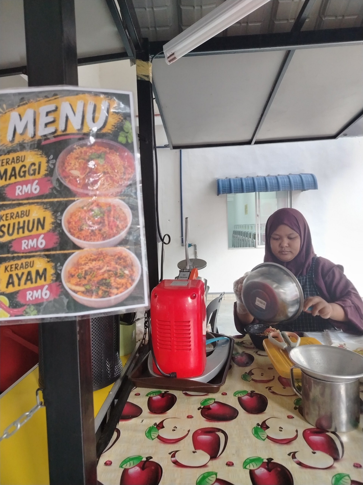
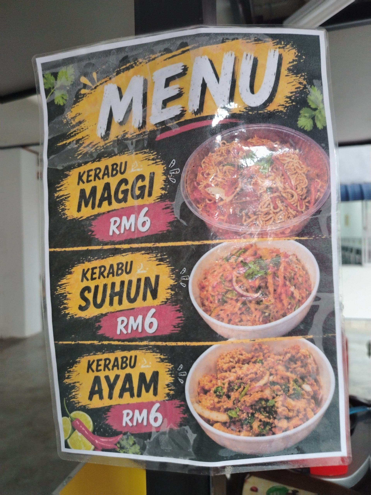

saya Merupakan pekerja yang bekerja di Gerai makan yang menjual pelbagai jenis menu.Saya berperanan menyediakan bahan mentah untuk membuat kuah tomyam, menyediakan pelbagai jenis mie iaitu, mie char kuew Teow, Maggie, Bihun,Suhun,kerabu maggie dan pelbagai lagi. Selain itu, saya juga menjalankan tugas dengan membersihkan dapur atau kedai sebelum membuka kedai pada petang hari, memastikan tiada sampah sarap yang ada sebelum membuka kedai, saya juga turut memastikan gerai dalam keadaan yang bersih dan selesa.Memang tidak dinafikan kerja seperti ini amat memenatkan tetapi saya bersyukur dapat bekerja dengan dan turut membantu dalam keadaan apa jua. Saya juga akan memastikan makanan yang dihidangkan menepati selera pelajar, saiz hidangan makanan juga menepati seperti ketetapan harga yang telah ditetapkan.

Saya mempunyai kepakaran dalam komunikasi dengan sesiapa sahaja.Walaupun dikelilingi oleh pelajar-pelajar yang berbeza negeri serta loghat mereka saya sebagai seorang pekerja dalam menjalankan kemahiran komumikasi dengan pelajar dengan baik sekali. Walaupun disini mempunyai ramai pelajar, saya dapat menjalankan tugas dengan seperti menyediakan makanan kepada mereka dengan laju dan teratur walaupun mereka minta makan untuk dibungkus atau makan di kedai sahaja. Walaupun saya masih muda, saya telah belajar banyak benda dalam dunia perniagaan ini. walaupun kadang-kadang kita ingin menyerah tetapi kita tetap perlu kuat jika ingin meneruskan hidup dan mencapai tentang apa yang kita inginkan.

Saya sebagai seorang pekerja juga berperanan dalam meningkatkan produk atau makanan perlis kepada orang luar.Kesempatan yang dapat untuk berniaga di Unicity ini memberi harapan atau peluang kepada saya untuk menghasilkan atau memperkenalkan makanan yang sedap kepada semua orang. Bekerja Kampus Unicity ini memberikan saya peluang untuk memperkenalkan makanan yang sememangnya terkenal di Negeri Perlis ini iaitu pelbagai jenis menu yang berasakan Tomyam atau aneka sup yang boleh didapati dikedai ini. Sememangnya memperkenalkan produk sendiri dapat meningkatkan kesedaran orang dari negeri luar tentang keenakan makanan kita atau produk tempatan ini.Selain itu, barang -barang mentah yang digunakan juga daripada pengusaha tempatan juga untuk menyokong ekonomi di kawasan sekitar perlis seterusnya dapat meningkatkan ekonomi di perlis pada masa hadapan.Bagi seorang pekerja yang menjalankan perniagaan, memberikan layanan yang mesra dan mempunyai nilai yang baik dapat meningkatkan persepsi orang ramai terhadap diri seseorang. Mempunyai sikap yang baik dapat menunjukkan bahawa layanan peniaga peniaga di sekitar perlis amat baik, dapat meningkatkan hubungan antara satu sama lain dan orang ramai dapat menjadikan Negeri Perlis ini sebagai satu negeri yang perlu dan wajib dilawati oleh pelancong-pelancong.
Anda boleh hubungi di:
+60-143745040